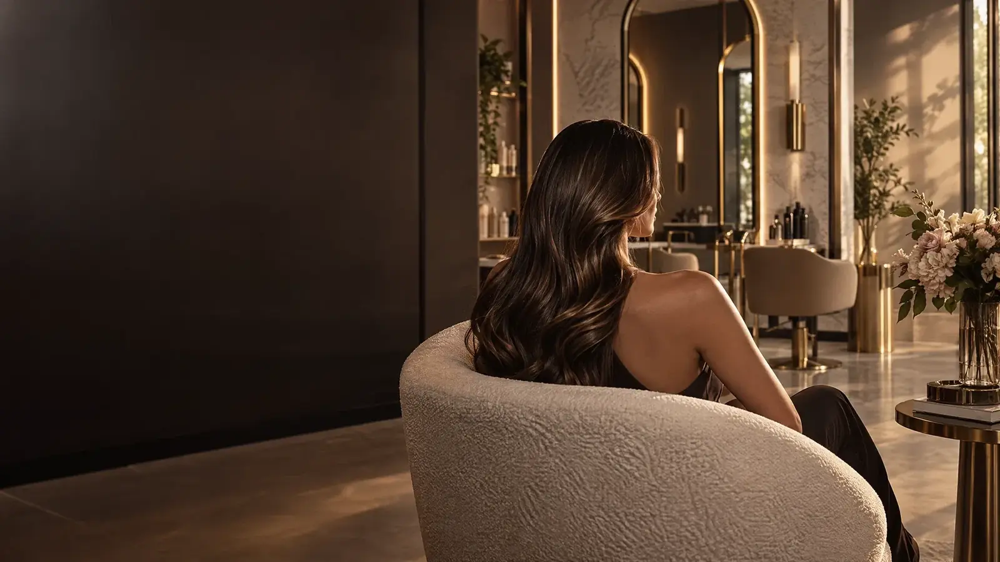

Zona Sul
Shopping RioMar
Av. República do Líbano, 251
Pina · Recife — PE

Ana Klein Beauty · Recife
Cuidado, técnica e beleza em três endereços de Recife. Escolha a unidade mais perto de você e marque seu momento pelo WhatsApp.
Ana Klein Beauty
Há mais de uma década, transformamos cuidados de beleza em rituais de presença. No Ana Klein Beauty, cada atendimento começa na conversa — e termina na sensação de se olhar no espelho e reconhecer uma versão ainda mais bonita de si.
Nossa forma de cuidar ↗O menu de cuidados
Serviços pensados para revelar o que você já tem de mais bonito. Valores são estimativas e podem variar conforme avaliação.
Seu ritual, do seu jeito
Combine seus serviços favoritos e tenha uma visão do tempo e investimento para o seu dia de beleza.
AK beauty ritualDentro do nosso espaço
Entre texturas naturais, luz quente e conversas sem pressa. Tudo foi pensado para que seu tempo aqui seja tão bonito quanto o resultado.
Detalhes que fazem
toda a diferença.
Onde você quer viver esse momento?
O perfil da Ana Klein Beauty atende três shoppings em Recife. Toque na unidade desejada e fale direto com a equipe responsável.
Zona Sul
Av. República do Líbano, 251
Pina · Recife — PE
Zona Sul
Boa Viagem · Recife — PE
Atendimento premium
Zona Norte
Casa Forte · Recife — PE
Atendimento premium
Depois do salão
Pequenos gestos em casa para manter o resultado bonito por mais tempo.
Venha nos encontrar
Pina · Recife — PE
Boa Viagem · Recife — PE
Casa Forte · Recife — PE